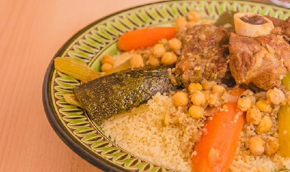

Algerian Couscous

Description
This recipe is made with mutton and chicken, but you can easily change the meats for lamb and/or merguez. I make
this often and my family loves it!
ingredients
- ¼ cup olive oil, or more as needed, divided
- 8 mutton chops, fat removed
- 4 chicken drumsticks
- 1 pinch salt and ground black pepper to taste
- 3 onions, quartered
- water to cover
- 2 tablespoons ground turmeric
- 2 tablespoons ground cumin
- 2 tablespoons ground coriander
- 3 potatoes, cut into chunks
- 3 turnips, cut into chunks
- 3 carrots, sliced lengthwise and cut into chunks
- 1 (6 ounce) can tomato paste
- 2 tablespoons ras el hanout
- 1 (7 ounce) can chickpeas, drained
- 2 zucchini, sliced lengthwise and cut into chunks
- 5 sprigs cilantro, chopped
- Couscous:
- 3 cups water
- 2 cups couscous
- 1 tablespoon butter
- 3 tablespoons harissa
Directions
- Step 1
Heat 3 tablespoons olive oil in a large pot over medium-high heat. Season mutton chops and chicken
drumsticks with salt and pepper; cook in batches with onions in the hot oil until browned, about 2
minutes
per side. Transfer to a large plate.
- Step 2
Scrape the bottom of the pot with a wooden spoon to release browned bits. Return mutton chops and
chicken to
the pot. Pour in enough water to cover; add turmeric, cumin, and coriander. Cover and bring to a
boil.
Reduce heat to medium; simmer for 20 minutes.
- Step 3
Stir potatoes, turnips, and carrots into the pot. Simmer, covered, until vegetables start to soften,
about
10 minutes. Mix in tomato paste and ras el hanout; cook for 10 minutes. Stir in chickpeas, zucchini,
and
cilantro; continue cooking, covered, until zucchini is tender, about 5 minutes.
- Step 4
Bring 3 cups water to a boil in a saucepan; remove from heat and stir in couscous and butter. Cover
saucepan
and let stand until water is absorbed completely, 5 to 10 minutes. Fluff couscous with a fork and
stir in 1
tablespoon olive oil. Transfer to a serving dish.
- Step 5
Ladle 2 scoops of cooking liquid into a bowl; mix in harissa until smooth.
- Step 6
Scoop vegetables onto a serving plate. Scoop mutton and chicken onto a separate plate. Serve
alongside
couscous, harissa sauce, and remaining cooking liquid in the pot.